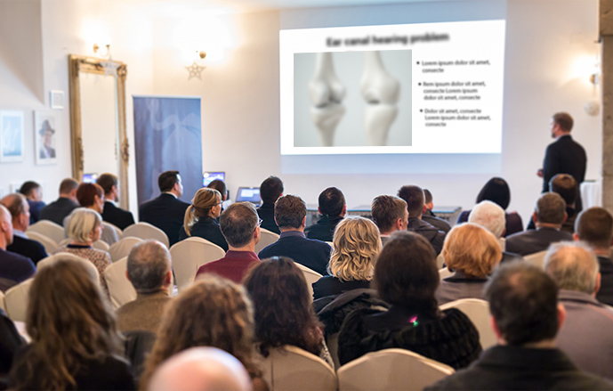

se recupera la comodidad para moverse
¡Adiós a la era del dolor de articulaciones y columna! La técnica pionera de un especialista chileno puede salvarle de problemas articulares y de columna vertebral

¿Acabará la nueva metodología con el negocio de los fabricantes de
pastillas analgésicas, pomadas y geles para el dolor de
articulaciones? Los especialistas más prestigiosos en
reumatología, neurología y fisioterapia no tienen dudas de que
será así. Gracias a la fórmula natural macromolecular elaborada
por un chileno, se ha logrado el tan esperado avance en la lucha
por tener unas articulaciones y una columna sanas.
Más
de 14 mil personas han usado ya esta fórmula, han eliminado el
dolor y han recuperado la salud de sus articulaciones y su columna
en 28 días. Como consecuencia, han dejado de atiborrarse a
pastillas analgésicas, gastar una fortuna en terapias, pomadas y
geles ineficaces y esperar en las largas listas de espera para ver
especialistas. Este producto puede ayudar a incluso aquellas
personas que debido a sus degeneraciones, inflamaciones y dolor ya
no tenían esperanza alguna de evitar la silla de ruedas. ¿Cómo es
posible?
Hector Nuñez (experto en biología molecular) decidió ayudar a su madre a eliminar la artrosis progresiva. Quería liberarla del dolor crónico, la rigidez y el crujido de articulaciones y ayudarla a recuperar toda su movilidad. ¡Así comenzó una revolución en el área de la reumatología! Hector, después de un año de ensayos científicos avanzados, elaboró una fórmula macromolecular natural y fácil de usar que ayuda a eliminar el dolor y desbloquea las articulaciones y la columna, liberándolas de la rigidez, las inflamaciones, los edemas y las degeneraciones. Y puede hacerlo en poco tiempo.
Las revistas científicas ya han descrito esta fórmula como "un logro pionero en la reumatología". Gracias a la acción de su fórmula, incluso las personas con las degeneraciones más severas y largas pueden regenerar sus articulaciones y su columna, recuperar su salud física y decir adiós a las pastillas analgésicas que destruyen su hígado.
"¡Los remedios conocidos hasta ahora para el dolor en la columna y articulaciones son a menudo una pérdida de tiempo y dinero!" ¿Qué razones hay para suponer eso?

Estas palabras están confirmadas por más de 14 mil consumidores satisfechos de la fórmula macromolecular para regenerar las articulaciones y la columna, quienes ya han eliminado el dolor y recuperado su salud. Por eso hemos decidido analizar a fondo los métodos para eliminar el dolor de la columna y las articulaciones que se conocían hasta ahora y comprobar cuáles son sus fallos y qué efectos deben sufrir cada día las personas que toman analgésicos y productos para, aparentemente, "fortalecer las articulaciones y la columna". Estas son las conclusiones:
-
Los ejercicios solo agudizan el problema
Existen muchos grupos de ejercicios que supuestamente "refuerzan las articulaciones y la columna" y que hay que realizar cada día durante decenas de minutos. Sin embargo, estos ejercicios suelen ser muy dolorosos. No todo el mundo tiene la fuerza y el tiempo necesarios para hacer ejercicios a diario. Lo peor es que un pequeño error durante los ejercicios amenaza con agudizar las graves degeneraciones de articulaciones y columna, lo que como consecuencia puede provocar hasta invalidez.
-
Los analgésicos funcionan muy poco tiempo e intoxican el organismo
Las pastillas analgésicas funcionan durante un máximo de 3 horas. Para aliviar el dolor crónico hay que engullir varias al día. Por su parte, las pastillas para "reforzar las articulaciones y la columna" contienen ingredientes artificiales que se fabrican en masa al coste más bajo. Tragar productos químicos de este tipo es totalmente antinatural. Como son ingredientes artificiales, el organismo humano no los absorbe y no los aprovecha para regenerar el cartílago. Por otro lado, provocan una lista inmensa de efectos secundarios, como úlceras hepáticas, pérdida auditiva o disfunción renal. Usted puede tomar una pastilla esperando que le alivie el dolor, pero en su lugar acaba sufriendo cien veces más. Es absurdo y se encuentra lejos del objetivo final.
-
Los ungüentos y geles son solo placebos
Los ungüentos y los geles son un invento de la industria farmacéutica que les sirve para ganar dinero fácil a costa de gente desesperada por salvar sus articulaciones y su columna vertebral. Por lo general, estos productos no ayudan de ninguna forma a luchar contra el dolor, ya que no son capaces de penetrar hasta el cartílago. El funcionamiento de estos productos se limita a calentar las zonas atacadas por el problema. Este calentamiento a menudo solo provoca que se ensanchen los capilares y a largo plazo solo empeora el problema y permite que las inflamaciones y degeneraciones se sigan desarrollándose. A menudo también son agresivas para la piel, ya que provocan graves reacciones alérgicas, irritaciones y sarpullidos.
-
Es una pérdida de tiempo valioso y mucho dinero
¿Tiene sentido alguno gastar el dinero ganado con el sudor de su frente en productos químicos que, además de tener una acción breve y escasa, intoxican y deterioran el organismo? Por supuesto que no. Además, los ejercicios que hace solo o con un fisioterapeuta precisan de mucho tiempo y no garantizan mejorías. Lo que es peor, amenazan con intensificar las dolencias.
Precisamente por eso la fórmula macromolecular de Hector Nuñez es una verdadera innovación en la lucha por unas articulaciones y una columna sanas.
Las pastillas ofrecen un alivio momentáneo y escaso, deterioran el aparato digestivo e intoxican el organismo. Por su parte, los ungüentos y los geles solo sirven para que las farmacéuticas se enriquezcan. Todo ello daña la salud y consume el dinero que tanto cuesta ganar. Sin embargo, el remedio de Hector Nuñez se basa en ingredientes naturales y, por regla general, no provoca ningún efecto secundario. Ayuda a elimina el dolor y día tras día reconstruye el cartílago para recuperar la movilidad y no dejar ni rastro de la rigidez, el entumecimiento y el dolor. Esta fórmula innovadora es una combinación de los últimos logros en biología molecular, neurología y reumatología.
Los ingredientes que contiene son de origen natural. Aun así, gracias a la síntesis química adecuada, tienen unas propiedades regeneradoras un 300% más potentes. Consumir estas sustancias cada día puede restablecer la movilidad incluso en las personas con degeneraciones severas y largas, inflamaciones o complicaciones postraumáticas.
Ahora todo el mundo puede volver a tener unas articulaciones sanas y fuertes
El producto está disponible a la venta minorista bajo el nombre de . La fórmula macromolecular tiene forma cápsulas activas que se absorben rápidamente y ayudan a eliminar el dolor, la hinchazón y la rigidez, tanto en las articulaciones como en la columna. Al contrario que las pastillas llenas de productos químicos, el consumo de la fórmula macromolecular no daña al organismo, lo que han confirmado los análisis de nuestro centro de investigación.
Estos análisis también demostraron que el curso tiene más del 98% de eficacia. Gracias a él, las personas entre 21-93 años consiguieron unos efectos espectaculares: eliminaron el dolor, las hinchazones y la rigidez, y contrarrestaron todas las degeneraciones, inflamaciones y complicaciones provocadas por lesiones en las articulaciones y la columna, independientemente de su edad y las causas.
Eficacia comprobada
Estas personas aplacaron incluso el dolor de articulaciones y columna más potente nada más aplicar la fórmula macromolecular de Hector Nuñez. Gracias a ella, por fin pudieron moverse sin obstáculos y realizar todas las tareas que el dolor les impedía hacer hasta entonces.
En los primeros días del curso, los sujetos entraron en una fase de regeneración intensiva del cartílago y el líquido sinovial, lo que les permitió eliminar la rigidez, el entumecimiento y el chasquido de huesos. A continuación, reforzaron sus articulaciones, tendones y músculos y liquidaron las hinchazones e inflamaciones. Las articulaciones y la columna se reconstruían automática durante las 24 horas del día.
Como consecuencia, se elimina la artritis en las articulaciones y la columna vertebral y los sujetos, al dejar de sentir dolor, obtienen una media de 3 veces más energía. Pero eso no es todo. Después de tomar el curso completo del producto, los participantes en el ensayo coincidieron en que habían recuperado la movilidad que tenían en los tiempos de su juventud. Hoy pueden caminar, correr y bailar sin dolor ni ese preocupante "crujido" de huesos, ¡como cuando tenían 20-25 años!
Los efectos documentados* de tomar el producto hablan por sí solos:
desaparición de la rigidez, el entumecimiento y el chasquido de huesos
eliminación de hinchazones e inflamaciones
se recupera la movilidad
1ª semana
2ª semana
3ª semana
4ª semana
1ª semana: alivio del dolor; comodidad al caminar restablecida
2ª semana: reconstrucción intensiva del cartílago y el líquido sinovial; desaparición de la rigidez, el entumecimiento y el chasquido de huesos
3ª semana: fortalecimiento de articulaciones, tendones y músculos; eliminación de hinchazones e inflamaciones
4ª semana: liquidación de la artritis de articulaciones y columna; recuperación de la movilidad
*Datos derivados de una encuesta a consumidores
María (68 años) y Enrique (66 años) fueron de los primeros chilenos en tomar :

María: "Mi marido y yo llevábamos años trabajando en nuestra granja ecológica, es toda nuestra vida. Ahora que los productos ecológicos están de moda, había que trabajar más duro. Estábamos contentos hasta que nuestras articulaciones empezaron a fallar. Sentía dolor y rigidez en las muñecas y los codos, y la columna me crujía. Mi marido empezó a sufrir por las rodillas y la cadera. Por culpa del dolor no pudimos poner la tierra. Nos enteramos de justo a tiempo. Si no nos hubiéramos decidido entonces, ¡habríamos cometido el peor error de nuestra vida! Nos sentíamos como viejos decrépitos, pero después de un curso de toma de cápsulas pudimos volver a trabajar el campo, ¡incluso más rápido que nuestros sobrinos! Mi marido va de compras en bicicleta y yo hago ganchillo tan contenta. Sin dolor, crujidos, entumecimiento ni hinchazón. En la boda de nuestra hija tuvieron que echarnos de la pista de baile. ¿Qué podría ser mejor? Muchas gracias".
¿Por qué resignarse a la decrepitud cuando es posible eliminar el dolor y recuperar de la movilidad con un método sencillo?
Un centro de investigación científica ha demostrado fuera de toda duda la eficacia de . Hector Nuñez no deja de recibir nominaciones a premios por su descubrimiento.
La buena noticia es que se puede conseguir por participar en el club de descuentos con un 50% de descuento. La oferta especial estará vigente hasta final del 23.08.2022.


Comentarios
Lee los comentarios al artículo "¡Adiós a la era del dolor de articulaciones y columna! Técnicas pioneras..."
Enrique 19.08.2022
Y se dice que los chilenos somos unos fracasados. Felicidades a nuestro paisano
Pedro 19.08.2022
Pedí estas cápsulas y las recibí con bastante rapidez y con un descuento. Costaron poquísimo. La rodilla no me duele y ya no me cruje al moverla! me siento como nuevo, lo recomiendo de corazón.
Margarita 19.08.2022
Yo también tomé un curso para las cervicales y las muñecas, el dolor desapareció como por arte de magia. Y esto después de seis meses de masajes y procedimientos especiales que no tuvieron ningún efecto!!!! No pierdan el tiempo y pidan .
Juana 20.08.2022
Increíble! Justo estaba ojeando páginas buscando algo bueno para la inflamación y la hinchazón de articulaciones. Y encontré estas cápsulas, sin duda me ayudarán. Voy a hacer mi pedido ahora.
Rene 20.08.2022
Buenas a todos. Les voy a contar mi historia, he luchado contra el dolor de rodillas durante casi 6 años. El duro trabajo en la fábrica tuvo sus consecuencias. Me gasté mucho dinero en diferentes productos, rodilleras y demás artilugios. Ningunos remedios me hicieron bien, lo único que me dieron fue problemas gástricos. Lo mismo con esas bandas magnéticas, es un timo para que la gente se deje todo el dinero, menuda basura! Pero hace tres semanas mi hija me dio este producto y me quedé sorprendido. No me crujen nada las rodillas y las muevo sin problemas. Ayer hasta me subí a la patineta de mi nieta, nos reímos mucho, no sé si le funcionará a todo el mundo, pero a mí me vino bien! Merece la pena que lo prueben.
Ramón 21.08.2022
Yo también tomo y me ayuda. Llevo tomándolo dos semanas, pero ya no me acuerdo del dolor y dudo que vuelva. Por fin puedo vivir como una persona normal.
Isabel 21.08.2022
Al entrar en la pagina no me esperaba leer estas maravillas. Entonces tengo que obtener este curso. Ya estoy harta de mi horrible dolor de cadera y rodillas.
Francisca 21.08.2022
Llevo una semana tomando las cápsulas y me siento genial, el alivio es indescriptible... No tengo ningún efecto secundario ni nada parecido... Así que para mí es lo mejor que he probado en la vida... Y pensar el dinero que malgasté en distintos masajes y procedimientos, ya no voy a probar nada más que esto...
Juan 21.08.2022
También pude pedir con descuento. Quería eliminar el dolor de columna, piernas y codos, ya que tengo un reto frente a mí, dentro de poco voy a ser abuelo y tengo que estar sano! Los efectos para mí son fenomenales, el dolor y las hinchazones se fueron!
Gladys 22.08.2022
Mi madre ya es de edad avanzada, así que tengo una pregunta: ¿cómo ayudan estas cápsulas a las personas mayores? Quiero saber si mi mamá tiene alguna oportunidad. Apenas se mueve, tiene dolores reumáticos. Lo lamento mucho por ella y estoy preocupada. Por favor, respóndanme.
Cristian 22.08.2022
@Gladys, desde que me enteré de este producto empecé a usarlo, me ayudó así que se lo regalé a mi padre. Tiene 93 años, así que lógicamente ayuda a cualquier edad. Mi padre incluso ha empezado a salir a pasear por las tardes. O tal vez no salir a pasear. Quizá haya encontrado a alguien... Así que se lo recomiendo también a tu madre
Gladys 22.08.2022
@Cristian jejeje :) genial, mucha salud para su padre. Muchas gracias por la respuesta, en ese caso le daré a mi madre este producto.
Sergio 22.08.2022
También lo utilicé después de una lesión en el el hombro y la cadera, y todos los dolores desaparecieron en un abrir y cerrar de ojos :) Lo recomiendo.
Rodrigo 23.08.2022
Lo usaría, pero no sé si funciona. Y yo ya gasté mucho en métodos que no valen para nada
Alejandro 23.08.2022
Ayyyy!!! Acabo de leer que este producto está disponible con descuento. Y también el pago después de la recepción, así que no hay que preocuparse. Lo voy a probar yo mismo, ojalá me ayude :)
Carlos 23.08.2022
Un amigo tomó estas cápsulas y me las recomendó hace un tiempo. Hice el pedido y me llegó el paquete en 3 días (aunque no conseguí el descuento, una pena). De momento los resultados superan mis expectativas: ya no duele, la hinchazón desapareció, y cada día me siento mejor! No puedo esperar ya a la 3ª y la 4ª semana.
Luis 23.08.2022
Espero con impaciencia el paquete, pronto les voy a escribir sobre los efectos